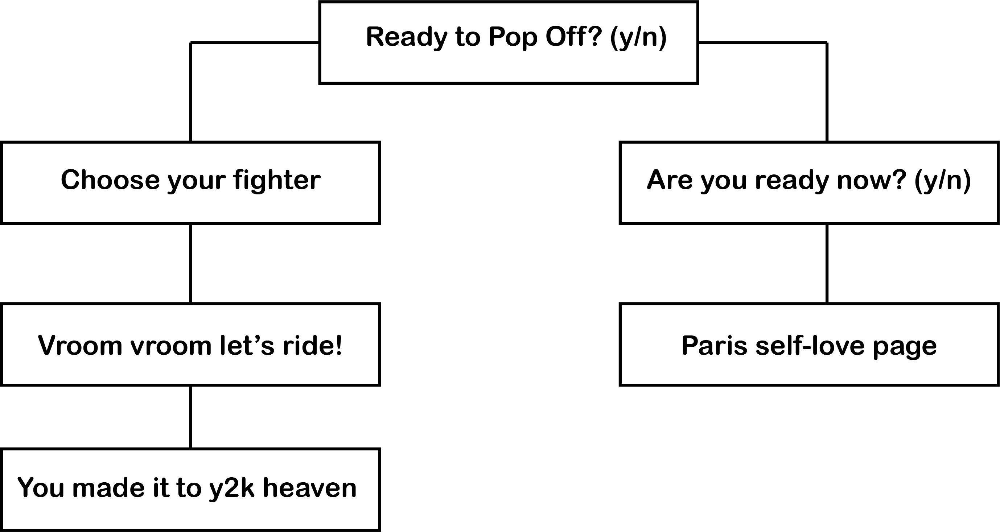
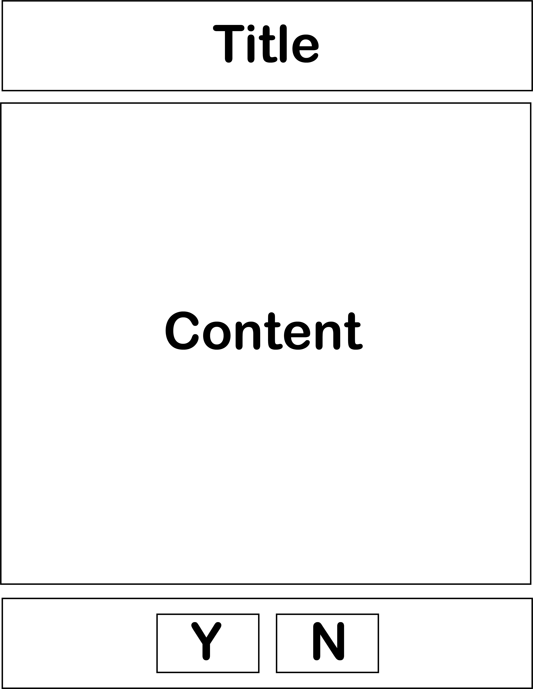

Pamela's Web Dev Midterm Proposal
Prepare yourself to take a trip back to the early 2000s!!! This project will serve as a sort of y2k
time capsule/shrine. Each page will be cohesive aesthetic-wise, but vary in content. We are serving
pink, sparkles, Lisa Frank stickers, and so much Britney Spears!! Is it cringe? Maybe. Are you going to
love it? Most definitely.
Sitemap

Wireframe
